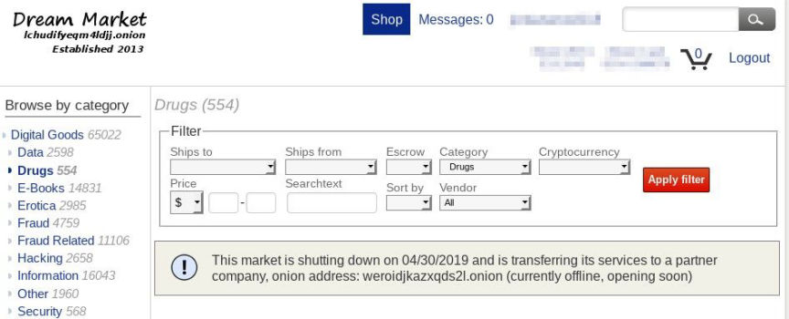
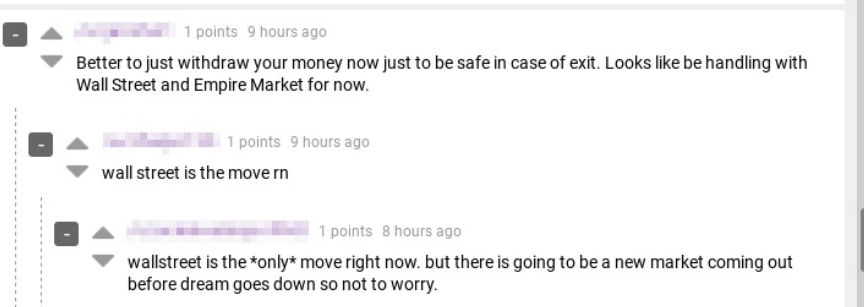
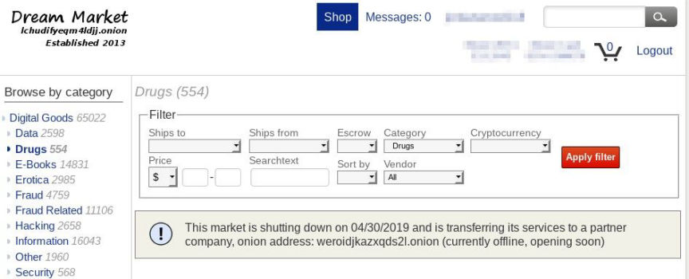
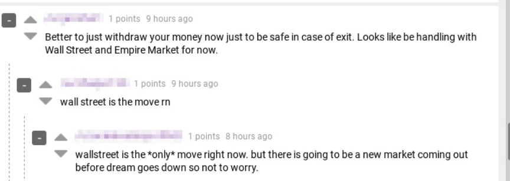

Dream Market is Shutting Down
~5 min read | Published on 2019-03-26, tagged Darkweb-Market, General-News using 1048 words.
According to an announcement on the Dream Market homepage, the marketplace is shutting down and transferring into the hands of a new company. The partner company, SamSara Market, is the Dream Market replacement.
Update: The new version of Dream Market is here: SamSara Market
An announcement on the homepage of the largest darkweb marketplace, Dream Market, notified customers that the market would be shutting down in one month from the date of publication.
This market is shutting down on 04/30/2019 and is transferring its services to a partner company, onion address: weroidjkazxqds2l.onion (currently offline, opening soon)

After a month of constant DDoS attacks, rendering the site unusable at times, the unexpected announcement brought hundreds of users to the darkweb forum Dread in an attempt to learn more about the message. Neither Dread nor the Dream Market forums contained information from a Dream Market staff member or associate. Very little information is available at this point.
Dream Market users can withdraw current balances; Orders can be finalized; Vendors can cash out but cannot withdraw their refundable vendor bond; Vendor profiles can be accessed with direct links.
Could this be Operation Bayonet 2.0?
The Dutch police quickly realized that after AlphaBay was shut down, its refugees would go searching for a new marketplace. If their scheme worked, AlphaBay’s users would flood to Hansa, which would secretly be under police control. “Not only would we get this effect of undermining the trust in dark markets, we’d also get this influx of people,” Ras says. They’d be able to surveil a far larger portion of the dark-web economy, he says, and instill a sense in users that there was nowhere to hide. Even fleeing to another marketplace wouldn’t let them escape law enforcement’s reach.
Wired
In this case, users would be fleeing to either the established Wallstreet Market or this new and untested market mentioned in the announcement from Dream. There is no evidence indicating that Wallstreet Market is under law enforcement control. Unlike Hansa prior to the takeover by Dutch law enforcement, Wallstreet Market has not changed in any suspicious manner.

No
The new market, which will apparently run on the “weroidjkazxqds2l.onion” address, is a more likely threat. This assumes law enforcement has infiltrated the Dream Market staff.
The more likely and reasonable explanation is that the owner of Dream Market, Speedstepper, needed a way to rebrand. Dream, although tried and true, is old and outdated. Many have called for redesigns or modernization. Speedstepper has successfully run a secure market for years. Rather than apply patches to a skeleton of a market, perhaps he wanted a new market altogether. Perhaps his new market will provide a better defense against DDoS attacks. And by “transferring its services to a partner company,” perhaps Speedstepper removed a target from their back.
Some questions that need answers:
Why rebrand at all? Why sell the market to a third party? Who could possibly afford to purchase Dream? If Speedstepper is simply rebranding, why open a new market?
Speedstepper is smart enough to know the new market would terrify the community.
Who is the new owner? Where is Speedstepper in all of this?
The Future of Dream
Wombat2Combat, the former moderator of the /r/darknetmarkets subreddit, submitted a post on Dread titled “Dream’s future.” In the post, he poses answers to some theoretical questions about the future of Dream. Note that as far as the public knows, Wombat2combat has no more a connection to Dream Market than the average darkweb market user. W2C simply has some authority and experience in this arena.Is the announcement real?
The announcement is not signed and not published in the news section either (located at the bottom of the right sidebar). The Dream forum is down for me at the time of writing, so who knows what is on there about the announcement.
Since it is however shown on the wallet page, the source code of the market had to be modified to include the announcement. This is only possible with server access which only the Dream admins have. So the announcement was most likely published by them.
What should I do?
Only keep as much money on Dream (or any other market) as you have to. Markets can vanish at any time and take your money with them. It happened many times before.
Take new markets with a grain of salt and healthy skepticism. Even if the new ‘partner company’ actually gets endorsed by Dream with a signed message, you should be careful as usual.
Till we know more about Dream’s plans you should follow the above tips and chill out / wait. Panicking comments do not add any value to discussions. Do not create more posts about this topic, keep it in the comments of this post.
Is Dream compromised / law enforcement?
Nobody knows except law enforcement. All the DNM takeovers in the past by law enforcement used the existing market addresses and did not create new ones as Dream does with this announcement. The announcement does not mean that Dream is compromised, but it also does not mean that Dream is not compromised. So be smart and practice good OpSec, then you will not have to worry much about a market being compromised.
How do I visit Dream / WSM / other markets?
Visit sites like DeepDotWeb or dark.fail [use the onion versions of their sites for improved anonymity and security] and cross-check the links you find on there with the ones you see on the other sites [e.g. check if the DDW link is also listed on dark.fail]. If the market use of additional measures such as PGP signed messages of their mirror addresses, then use these too.
For Dream you can find them at mirror.onion/verifySafeHeaven. Make sure that the signed message verifies successfully with the key used by Dream to sign mirrors (I pasted it in the comments) and you are actually on that mirror address.
You should check for mirrors (e.g. the links you get shown after logging in on Dream) only once and bookmark them if they check out. After that only use your bookmarks, otherwise you risk getting phished and loosing your money.
Dream Market Addresses
Mirror: t5kqoucj5kbboheh.onion Mirror: 7ep7acrkunzdcw3l.onion Mirror: vilpaqbrnvizecjo.onion Mirror: igyifrhnvxq33sy5.onion Mirror: 6qlocfg6zq2kyacl.onion Mirror: x3x2dwb7jasax6tq.onion Mirror: bkjcpa2klkkmowwq.onion Mirror: xytjqcfendzeby22.onion Mirror: nhib6cwhfsoyiugv.onion Mirror: k3pd243s57fttnpa.onion
Adding “/verifySafeHeaven/” to any of the Dream addresses presents a page where one can check Dream addresses against signed messages from the market in order to verify their authenticity.
Update: The new version of Dream Market is here: SamSara Market
An announcement on the homepage of the largest darkweb marketplace, Dream Market, notified customers that the market would be shutting down in one month from the date of publication.
This market is shutting down on 04/30/2019 and is transferring its services to a partner company, onion address: weroidjkazxqds2l.onion (currently offline, opening soon)

Dream Market is Shutting Down
After a month of constant DDoS attacks, rendering the site unusable at times, the unexpected announcement brought hundreds of users to the darkweb forum Dread in an attempt to learn more about the message. Neither Dread nor the Dream Market forums contained information from a Dream Market staff member or associate. Very little information is available at this point.
Could this be Operation Bayonet 2.0?
The Dutch police quickly realized that after AlphaBay was shut down, its refugees would go searching for a new marketplace. If their scheme worked, AlphaBay’s users would flood to Hansa, which would secretly be under police control. “Not only would we get this effect of undermining the trust in dark markets, we’d also get this influx of people,” Ras says. They’d be able to surveil a far larger portion of the dark-web economy, he says, and instill a sense in users that there was nowhere to hide. Even fleeing to another marketplace wouldn’t let them escape law enforcement’s reach.
Wired
In this case, users would be fleeing to either the established Wallstreet Market or this new and untested market mentioned in the announcement from Dream. There is no evidence indicating that Wallstreet Market is under law enforcement control. Unlike Hansa prior to the takeover by Dutch law enforcement, Wallstreet Market has not changed in any suspicious manner.

Dread Users Talk About the Dream Closure
No
The new market, which will apparently run on the “weroidjkazxqds2l.onion” address, is a more likely threat. This assumes law enforcement has infiltrated the Dream Market staff.
The more likely and reasonable explanation is that the owner of Dream Market, Speedstepper, needed a way to rebrand. Dream, although tried and true, is old and outdated. Many have called for redesigns or modernization. Speedstepper has successfully run a secure market for years. Rather than apply patches to a skeleton of a market, perhaps he wanted a new market altogether. Perhaps his new market will provide a better defense against DDoS attacks. And by “transferring its services to a partner company,” perhaps Speedstepper removed a target from their back.
Some questions that need answers:
The Future of Dream
Wombat2Combat, the former moderator of the /r/darknetmarkets subreddit, submitted a post on Dread titled “Dream’s future.” In the post, he poses answers to some theoretical questions about the future of Dream. Note that as far as the public knows, Wombat2combat has no more a connection to Dream Market than the average darkweb market user. W2C simply has some authority and experience in this arena.Is the announcement real?
The announcement is not signed and not published in the news section either (located at the bottom of the right sidebar). The Dream forum is down for me at the time of writing, so who knows what is on there about the announcement.
Since it is however shown on the wallet page, the source code of the market had to be modified to include the announcement. This is only possible with server access which only the Dream admins have. So the announcement was most likely published by them.
What should I do?
Only keep as much money on Dream (or any other market) as you have to. Markets can vanish at any time and take your money with them. It happened many times before.
Take new markets with a grain of salt and healthy skepticism. Even if the new ‘partner company’ actually gets endorsed by Dream with a signed message, you should be careful as usual.
Till we know more about Dream’s plans you should follow the above tips and chill out / wait. Panicking comments do not add any value to discussions. Do not create more posts about this topic, keep it in the comments of this post.
Is Dream compromised / law enforcement?
Nobody knows except law enforcement. All the DNM takeovers in the past by law enforcement used the existing market addresses and did not create new ones as Dream does with this announcement. The announcement does not mean that Dream is compromised, but it also does not mean that Dream is not compromised. So be smart and practice good OpSec, then you will not have to worry much about a market being compromised.
How do I visit Dream / WSM / other markets?
Visit sites like DeepDotWeb or dark.fail [use the onion versions of their sites for improved anonymity and security] and cross-check the links you find on there with the ones you see on the other sites [e.g. check if the DDW link is also listed on dark.fail]. If the market use of additional measures such as PGP signed messages of their mirror addresses, then use these too.
For Dream you can find them at mirror.onion/verifySafeHeaven. Make sure that the signed message verifies successfully with the key used by Dream to sign mirrors (I pasted it in the comments) and you are actually on that mirror address.
You should check for mirrors (e.g. the links you get shown after logging in on Dream) only once and bookmark them if they check out. After that only use your bookmarks, otherwise you risk getting phished and loosing your money.
Dream Market Addresses
Adding “/verifySafeHeaven/” to any of the Dream addresses presents a page where one can check Dream addresses against signed messages from the market in order to verify their authenticity.